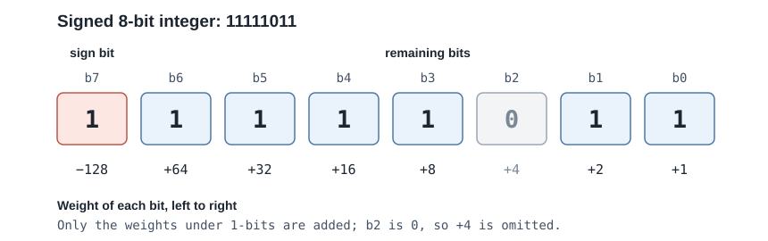
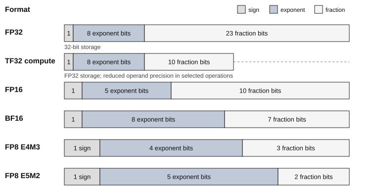

2026-08-27 · Numerical Computing, Machine Learning, Quantization
Int32 and float32 are universal. However, what's the difference between them and other dtypes. When should we choose each over other? In this blog, I will dig in and explain.
Signed integers usually use two's complement. For an n-bit pattern b_{n-1}\ldots b_0, the leftmost bit has negative weight and the rest have positive powers-of-two weights:

For example, 11111011 represents
Range: An n-bit signed integer covers -2^{n-1} through 2^{n-1}-1; for example, int8 covers -128 through 127. Precision: Every whole number in that range is exact, with spacing 1 between neighbors. Plain integers cannot represent fractions such as 1.5.
A floating-point number divides its bits into a sign, an exponent, and a fraction. FP32 uses 1 sign bit, 8 exponent bits, and 23 fraction bits:

For a normal FP32 value, let s be the sign bit, E the integer stored in the exponent field, and F the integer stored in the fraction field. Then
For example, 0 | 01111111 | 10000000000000000000000 has s=0, E=127, and F=2^{22}, so it represents 1.5. Reserved exponent patterns represent zero, subnormal values, infinities, and NaNs.
You can verify the bit pattern with Python's standard-library struct module:
import struct
bits = "0" + "01111111" + "10000000000000000000000"
raw = int(bits, 2).to_bytes(4, byteorder="big")
value = struct.unpack(">f", raw)[0]
print(value) # 1.5
Range: The largest finite FP32 value is (2-2^{-23})2^{127}\approx3.40\times10^{38}. The smallest positive normal value is 2^{-126}\approx1.18\times10^{-38}; subnormal values extend down to 2^{-149}\approx1.40\times10^{-45}.
Precision: A normal FP32 value has 24 significant binary bits: 23 stored fraction bits plus an implicit leading 1. Near 1, neighboring values are 2^{-23}\approx1.19\times10^{-7} apart. Between 2^e and 2^{e+1}, the gap is 2^{e-23}, so absolute spacing grows with the exponent (roughly seven significant decimal digits remain).
Section 1.3 showed how to decode an FP32 bit pattern. Now we will go the other way: what happens when we try to store a real number, and what happens when we calculate with the stored values?
The decimal number 0.1 is a simple example. In binary, it repeats forever:
FP32 has only 23 stored fraction bits, so it cannot hold the entire expansion. It must choose a nearby value, which means the stored number is not exactly 0.1. The next section shows how to find its bits.
We can build the bit pattern from the decimal input in four steps:
10011001100110011001100; the next bit and the remaining tail make the exact value closer to the next FP32 number, so round up to 10011001100110011001101.Putting the fields together gives 0 | 01111011 | 10011001100110011001101, or 0x3DCCCCCD in hexadecimal. Decoding those bits gives approximately 0.10000000149011612, slightly above the original 0.1.
The same rule works for IEEE binary16 (FP16), binary32 (FP32), and binary64 (FP64). Let w be the number of exponent bits and t the number of stored fraction bits. For a finite, nonzero value x whose rounded result remains normal, define
Then the fields are
Here F is rounded to the nearest integer, with halfway cases going to the even integer. Store s in one bit, E in w bits, and F in t bits. If rounding makes F=2^t, set F=0 and increase E by one. For 0.1, e=-4 and m=1.6 in every format; only w, t, and therefore the rounded fields change:
| Format | Exponent bits w | Fraction bits t | Bias B | Stored 0.1 bits (hex) |
|---|---|---|---|---|
| FP16 | 5 | 10 | 15 | 0x2E66 |
| FP32 | 8 | 23 | 127 | 0x3DCCCCCD |
| FP64 | 11 | 52 | 1023 | 0x3FB999999999999A |
Zero, subnormal values, infinities, and NaNs use special exponent patterns, so this normal-value rule needs adjustments for them.
For ordinary finite inputs, FP32 arithmetic can be understood as operating on the stored operands, then rounding the mathematical result to FP32. The main steps depend on the operation:
These examples happen to have exact FP32 answers. Other results fall between representable values and must be rounded. Zero, infinities, NaNs, overflow, and underflow also need special handling.
Rounding after an operation can discard information needed by a later one. Near 100{,}000{,}000, neighboring FP32 values are 8 apart. Adding 1 is too small to change the stored value: 100{,}000{,}000+1 rounds back to 100{,}000{,}000.
If every intermediate result is stored in FP32, the same numbers give two answers:
In exact arithmetic, both expressions equal 1. The first FP32 calculation loses the 1 in its intermediate sum, and the later subtraction cannot recover it. This is why operation order and accumulator precision matter when summing many values.
Cited as:
Le Hoang Viet. "Bits, Range, and Precision: How Numerical Data Types Actually Work". Le Hoang Viet's Homepage, August 2026. https://mikyx-1.github.io/blog/numerical-dtypes.html
Or the BibTeX entry:
@misc{le2026numericaldtypes,
title = {Bits, Range, and Precision: How Numerical Data Types Actually Work},
author = {Le, Hoang Viet},
journal = {Le Hoang Viet's Homepage},
year = {2026},
month = {August},
url = {https://mikyx-1.github.io/blog/numerical-dtypes.html}
}← Back to the blog index. Send feedback by email.